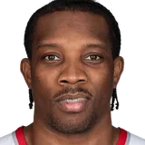

Isaiah Canaan
2013-14 to 2018-19 · Career Map
 Houston,
Houston,  Philadelphia,
Philadelphia,  Chicago,
Chicago,  Phoenix,
Phoenix,  Minnesota,
Minnesota,  Milwaukee
Milwaukee
His best final NBA finish was #4 of 30, with the 2014-15 Houston Rockets. In his 235 games for 6 teams over 6 seasons they went 86–149 (36.6%), −63 games under .500, with an average final finish of 19.3.
Jump to: Record by opponent · Season by season · Teammate help
Compare Isaiah Canaan with…
Final NBA finish, season by season
Title Finals Other playoffs Missed playoffs. #1 = champion; the dashed line is last place that season. Each point opens that season's final standings.
All 30 teams ranked in 2014-15, his best finish (#4)Teammate help
 James Harden10.02 seasons
James Harden10.02 seasons Dwight Howard4.01 season
Dwight Howard4.01 season Jimmy Butler3.01 season
Jimmy Butler3.01 season
Career
Career records (W–L, W − L, with and without) include 2026-27 games through Nov. 22, 2026; season counts and finishes are through 2025-26. Each card opens its board in the same scope. How we count.

Latest completed seasons
Season by season
Newest first; every header sorts. Final NBA finish is the team's rank among all teams that season (#1 = champion) and opens that season's standings. "Without him" uses the team-season window; the span line counts only the games between his first and last game for the team.
| 2018-19 | #28 of 30 | 19–63 23.2% | Missed playoffs | 19 of 82 | 4–15 21.1% | 7–27 20.6%span: 0–1, gap +21.1 | +0.5 | |
| 2018-19 | #21 of 30 | 36–46 43.9% | Missed playoffs | 7 of 82 | 3–4 42.9% | 15–16 48.4%span: N/A, gap N/A | −5.5 | |
| 2018-19 | #3 of 30 | 60–22 73.2% | Lost conf finals 2–4 | 4 of 82 | 3–1 75.0% | 14–7 66.7%span: N/A, gap N/A | +8.3 | |
| 2017-18 | #3 of 30 | 65–17 79.3% | Lost conf finals 3–4 | 1 of 82 | 1–0 100.0% | 22–4 84.6%span: N/A, gap N/A | +15.4 | |
| 2017-18 | #30 of 30 | 21–61 25.6% | Missed playoffs | 19 of 82 | 8–11 42.1% | 11–47 19.0%span: 1–2, gap +8.8 | +23.1 | |
| 2016-17 | #15 of 30 | 41–41 50.0% | Lost 1st round 2–4 | 39 of 82 | 19–20 48.7% | 22–21 51.2%span: 21–21, gap −1.3 | −2.4 | |
| 2015-16 | #30 of 30 | 10–72 12.2% | Missed playoffs | 77 of 82 | 10–67 13.0% | 0–5 0.0%span: 0–1, gap +13.0 | +13.0 | |
| 2014-15 | #4 of 30 | 56–26 68.3% | Lost conf finals 1–4 | 25 of 82 | 18–7 72.0% | 19–11 63.3%span: 18–10, gap +7.7 | +8.7 | |
| 2014-15 | #28 of 30 | 18–64 22.0% | Missed playoffs | 22 of 82 | 6–16 27.3% | 0–7 0.0%span: N/A, gap N/A | +27.3 | |
| 2013-14 | #9 of 30 | 54–28 65.9% | Lost 1st round 2–4 | 22 of 82 | 14–8 63.6% | 40–20 66.7%span: 22–9, gap −7.3 | −3.0 |
On/off, starts and close games
From the lineup data, 1996-97 on. On/off is net points per 100 possessions with him on the floor minus off, a different unit from the win-rate gaps. Started and off the bench are team records in those games; close games are those within 5 points in the last 5 minutes with him on the floor.
| 2018-19 | −7.5 | 3–12 20.0% | 1–3 25.0% | 1–3 25.0% | |
| 2018-19 | −11.4 | 0–1 0.0% | 3–3 50.0% | 0–1 0.0% | |
| 2018-19 | −50.8 | N/A | 3–1 75.0% | N/A | |
| 2017-18 | −32.4 | N/A | 1–0 100.0% | N/A | |
| 2017-18 | +12.0 | 0–1 0.0% | 8–10 44.4% | 6–2 75.0% | |
| 2016-17 | −10.5 | N/A | 19–20 48.7% | 3–7 30.0% | |
| 2015-16 | −5.1 | 5–34 12.8% | 5–33 13.2% | 4–25 13.8% | |
| 2014-15 | −6.9 | 7–2 77.8% | 11–5 68.8% | 2–0 100.0% | |
| 2014-15 | −5.1 | 3–9 25.0% | 3–7 30.0% | 3–7 30.0% | |
| 2013-14 | −17.0 | N/A | 14–8 63.6% | 1–3 25.0% |
Teammate help by season
Two separate numbers per season, each with every teammate that adds to it. Help this season = Teammates Score points for honors won that season by teammates who shared a game with him. Help coming in = the same teammates' honors from the season before. How help works.
- 2018-19
 Phoenix
Phoenix
 Deandre Ayton All-Rookie 1st0.2519 g
Deandre Ayton All-Rookie 1st0.2519 g
Help this season: 0.25 = 0.25 Deandre Ayton
More: help coming in and other teammates
Help coming in (teammates' honors the season before): 0.125 = 0.125 Josh Jackson
Other teammates (no honors that season): Mikal Bridges 19 g, Josh Jackson 19 g, TJ Warren 18 g, Richaun Holmes 18 g, Trevor Ariza 17 g, Jamal Crawford 17 g, Devin Booker 17 g, Ryan Anderson 11 g, Elie Okobo 10 g, Tyson Chandler 6 g, Dragan Bender 5 g, Troy Daniels 4 g, De'Anthony Melton 3 g
- 2018-19
 Minnesota
Minnesota
 Karl-Anthony Towns All-Star17 g
Karl-Anthony Towns All-Star17 g
Help this season: 1 = 1 Karl-Anthony Towns
More: help coming in and other teammates
Help coming in (teammates' honors the season before): 3 = 3 Karl-Anthony Towns
Other teammates (no honors that season): Luol Deng 7 g, Dario Saric 7 g, Gorgui Dieng 7 g, Taj Gibson 7 g, Josh Okogie 7 g, Jerryd Bayless 6 g, Anthony Tolliver 6 g, Andrew Wiggins 5 g, Jeff Teague 3 g, Derrick Rose 3 g, CJ Williams 1 g, Keita Bates-Diop 1 g
- 2018-19
 Milwaukee
Milwaukee
 Giannis Antetokounmpo MVPAll-NBA 1stAll-StarAll-Def 1st123 g
Giannis Antetokounmpo MVPAll-NBA 1stAll-StarAll-Def 1st123 g Khris Middleton All-Star14 g
Khris Middleton All-Star14 g
Eric Bledsoe All-Def 1st13 gHelp this season: 14 = 12 Giannis Antetokounmpo + 1 Khris Middleton + 1 Eric Bledsoe
More: help coming in and other teammates
Help coming in (teammates' honors the season before): 4 = 4 Giannis Antetokounmpo
Other teammates (no honors that season): Tony Snell 4 g, Nikola Mirotic 4 g, Brook Lopez 4 g, Pat Connaughton 4 g, Ersan Ilyasova 4 g, DJ Wilson 3 g, Malcolm Brogdon 3 g, Christian Wood 2 g, Bonzie Colson 1 g
- 2017-18
 Houston
James Harden MVPAll-NBA 1stAll-Star111 g
Houston
James Harden MVPAll-NBA 1stAll-Star111 g
Help this season: 11 = 11 James Harden
More: help coming in and other teammates
Help coming in (teammates' honors the season before): 5.5 = 5 James Harden + 0.5 Eric Gordon
Other teammates (no honors that season): Tarik Black 1 g, Clint Capela 1 g, Luc Mbah a Moute 1 g, Ryan Anderson 1 g, Eric Gordon 1 g, PJ Tucker 1 g, Demetrius Jackson 1 g
- 2017-18Phoenix
 Josh Jackson All-Rookie 2nd0.12518 g
Josh Jackson All-Rookie 2nd0.12518 g
Help this season: 0.125 = 0.125 Josh Jackson
More: help coming in and other teammates
Help coming in (teammates' honors the season before): 0.125 = 0.125 Marquese Chriss
Other teammates (no honors that season): Troy Daniels 19 g, Tyler Ulis 19 g, Dragan Bender 19 g, TJ Warren 17 g, Alex Len 15 g, Tyson Chandler 14 g, Marquese Chriss 13 g, Devin Booker 13 g, Jared Dudley 12 g, Danuel House 9 g, Greg Monroe 8 g, Alec Peters 3 g, Mike James 2 g, Davon Reed 2 g
- 2016-17
 Chicago
Jimmy Butler All-NBA 3rdAll-Star336 g
Chicago
Jimmy Butler All-NBA 3rdAll-Star336 g
Help this season: 3 = 3 Jimmy Butler
More: help coming in and other teammates
Help coming in (teammates' honors the season before): 2.5 = 1.5 Jimmy Butler + 1 Dwyane Wade
Other teammates (no honors that season): Robin Lopez 38 g, Nikola Mirotic 34 g, Bobby Portis 34 g, Taj Gibson 33 g, Jerian Grant 32 g, Rajon Rondo 30 g, Denzel Valentine 30 g, Dwyane Wade 29 g, Cristiano Felicio 29 g, Doug McDermott 21 g, Michael Carter-Williams 17 g, Paul Zipser 17 g, Joffrey Lauvergne 5 g, Anthony Morrow 4 g and 2 more
- 2015-16
 Philadelphia
Philadelphia
 Jahlil Okafor All-Rookie 1st0.2552 g
Jahlil Okafor All-Rookie 1st0.2552 g
Help this season: 0.25 = 0.25 Jahlil Okafor
More: help coming in and other teammates
Help coming in (teammates' honors the season before): 0.25 = 0.25 Nerlens Noel
Other teammates (no honors that season): TJ McConnell 76 g, Jerami Grant 72 g, Hollis Thompson 72 g, Nik Stauskas 69 g, Robert Covington 62 g, Nerlens Noel 62 g, Richaun Holmes 51 g, JaKarr Sampson 46 g, Ishmael Smith 45 g, Carl Landry 35 g, Kendall Marshall 27 g, Christian Wood 16 g, Elton Brand 15 g, Phil Pressey 14 g and 2 more
- 2014-15Houston
James Harden All-NBA 1stAll-Star525 g
Help this season: 5 = 5 James Harden
More: help coming in and other teammates
Help coming in (teammates' honors the season before): 9.5 = 5 James Harden + 4 Dwight Howard + 0.5 Patrick Beverley
Other teammates (no honors that season): Trevor Ariza 25 g, Donatas Motiejunas 25 g, Kostas Papanikolaou 24 g, Jason Terry 23 g, Joey Dorsey 20 g, Dwight Howard 18 g, Patrick Beverley 16 g, Tarik Black 15 g, Troy Daniels 11 g, Nick Johnson 10 g, Corey Brewer 9 g, Josh Smith 8 g, Francisco Garcia 8 g, Terrence Jones 5 g and 2 more
- 2014-15Philadelphia
 Nerlens Noel All-Rookie 1st0.2522 g
Nerlens Noel All-Rookie 1st0.2522 g
Help this season: 0.25 = 0.25 Nerlens Noel
More: help coming in and other teammates
Help coming in (teammates' honors the season before): 0
Other teammates (no honors that season): Hollis Thompson 22 g, Ishmael Smith 21 g, JaKarr Sampson 20 g, Jerami Grant 20 g, Robert Covington 20 g, Thomas Robinson 18 g, Luc Mbah a Moute 18 g, Furkan Aldemir 16 g, Jason Richardson 15 g, Henry Sims 13 g, JaVale McGee 5 g, Glenn Robinson III 4 g, Tim Frazier 2 g
- 2013-14Houston
James Harden All-NBA 1stAll-Star521 gDwight Howard All-NBA 2ndAll-Star411 g
 Patrick Beverley All-Def 2nd0.59 g
Patrick Beverley All-Def 2nd0.59 g
Help this season: 9.5 = 5 James Harden + 4 Dwight Howard + 0.5 Patrick Beverley
More: help coming in and other teammates
Help coming in (teammates' honors the season before): 6 = 3 James Harden + 3 Dwight Howard
Other teammates (no honors that season): Terrence Jones 21 g, Donatas Motiejunas 21 g, Jeremy Lin 21 g, Chandler Parsons 20 g, Omri Casspi 20 g, Omer Asik 16 g, Francisco Garcia 14 g, Jordan Hamilton 13 g, Troy Daniels 4 g, Aaron Brooks 4 g, Ronnie Brewer 4 g, Robert Covington 3 g, Josh Powell 1 g
Record against each opponent
Regular season, through 2025-26 (2026-27 games not included): 235 games, 86–149, against 30 franchises.
Grouped by franchise (named as today); game lists keep each team's name that season. Filters and the tab are kept in the URL, so a filtered view can be shared.
| Games list | |||||||
|---|---|---|---|---|---|---|---|
| 11 | 4–7 | 36.4% | −3 | N/A | 2013-14 to 2018-19 | ||
| 11 | 3–8 | 27.3% | −5 | N/A | 2014-15 to 2018-19 | ||
| 11 | 6–5 | 54.5% | +1 | N/A | 2013-14 to 2018-19 | ||
| 10 | 2–8 | 20.0% | −6 | 0–1 (0–3 in games) | 2014-15 to 2018-19 | ||
| 10 | 2–8 | 20.0% | −6 | N/A | 2013-14 to 2018-19 | ||
| 10 | 4–6 | 40.0% | −2 | N/A | 2014-15 to 2018-19 | ||
| 10 | 2–8 | 20.0% | −6 | N/A | 2013-14 to 2018-19 | ||
| 9 | 1–8 | 11.1% | −7 | N/A | 2013-14 to 2018-19 | ||
| 9 | 3–6 | 33.3% | −3 | N/A | 2013-14 to 2018-19 | ||
| 9 | 4–5 | 44.4% | −1 | N/A | 2013-14 to 2017-18 | ||
| 9 | 4–5 | 44.4% | −1 | N/A | 2013-14 to 2018-19 | ||
| 8 | 3–5 | 37.5% | −2 | N/A | 2013-14 to 2018-19 | ||
| 8 | 2–6 | 25.0% | −4 | N/A | 2013-14 to 2018-19 | ||
| 8 | 3–5 | 37.5% | −2 | N/A | 2014-15 to 2017-18 | ||
| 8 | 6–2 | 75.0% | +4 | N/A | 2013-14 to 2018-19 | ||
| 8 | 6–2 | 75.0% | +4 | N/A | 2013-14 to 2018-19 | ||
| 8 | 4–4 | 50.0% | 0 | N/A | 2013-14 to 2018-19 | ||
| 8 | 2–6 | 25.0% | −4 | N/A | 2014-15 to 2016-17 | ||
| 7 | 1–6 | 14.3% | −5 | N/A | 2013-14 to 2018-19 | ||
| 7 | 3–4 | 42.9% | −1 | N/A | 2013-14 to 2016-17 | ||
| 7 | 4–3 | 57.1% | +1 | N/A | 2014-15 to 2018-19 | ||
| 7 | 3–4 | 42.9% | −1 | N/A | 2014-15 to 2016-17 | ||
| 7 | 1–6 | 14.3% | −5 | N/A | 2013-14 to 2018-19 | ||
| 6 | 2–4 | 33.3% | −2 | N/A | 2014-15 to 2017-18 | ||
| 6 | 3–3 | 50.0% | 0 | N/A | 2014-15 to 2017-18 | ||
| 6 | 4–2 | 66.7% | +2 | N/A | 2013-14 to 2018-19 | ||
| 5 | 1–4 | 20.0% | −3 | N/A | 2014-15 to 2015-16 | ||
| 5 | 0–5 | 0.0% | −5 | N/A | 2014-15 to 2018-19 | ||
| 4 | 1–3 | 25.0% | −2 | N/A | 2015-16 to 2018-19 | ||
| 3 | 2–1 | 66.7% | +1 | N/A | 2015-16 to 2016-17 |
Rows add up to his career record in his games. A playoff series counts when he played in it; early round-robin games show as games only. How we count.
Playoffs, with and without him
Arrival and departure
Team wins per 82 games the season before he arrived vs his first season there, and his last season vs the season after he left. He leaves a team only when his next season with games is for another team (or he never plays again); whole seasons he missed and came back from are one "Missed" row with the team's record without him. Per 82 so short seasons compare fairly. These are team records, not a measure of what he did.
| Left | after 2018-19 | 2018-19: 19–63 19.0 per 82 | 2019-20: 34–39 38.2 per 82 without him | +19.2 wins | |
| Left | after 2018-19 | 2018-19: 36–46 36.0 per 82 | 2019-20: 19–45 24.3 per 82 without him | −11.7 wins | |
| Left | after 2018-19 | 2018-19: 60–22 60.0 per 82 | 2019-20: 56–17 62.9 per 82 without him | +2.9 wins | |
| Arrived | 2018-19 | 2017-18: 47–35 47.0 per 82 | 2018-19: 36–46 36.0 per 82 | −11.0 wins | |
| Arrived | 2018-19 | 2017-18: 44–38 44.0 per 82 | 2018-19: 60–22 60.0 per 82 | +16.0 wins | |
| Left | after 2017-18 | 2017-18: 65–17 65.0 per 82 | 2018-19: 53–29 53.0 per 82 without him | −12.0 wins | |
| Arrived | 2017-18 | 2016-17: 55–27 55.0 per 82 | 2017-18: 65–17 65.0 per 82 | +10.0 wins | |
| Arrived | 2017-18 | 2016-17: 24–58 24.0 per 82 | 2017-18: 21–61 21.0 per 82 | −3.0 wins | |
| Left | after 2016-17 | 2016-17: 41–41 41.0 per 82 | 2017-18: 27–55 27.0 per 82 without him | −14.0 wins | |
| Arrived | 2016-17 | 2015-16: 42–40 42.0 per 82 | 2016-17: 41–41 41.0 per 82 | −1.0 wins | |
| Left | after 2015-16 | 2015-16: 10–72 10.0 per 82 | 2016-17: 28–54 28.0 per 82 without him | +18.0 wins | |
| Left | after 2014-15 | 2014-15: 56–26 56.0 per 82 | 2015-16: 41–41 41.0 per 82 without him | −15.0 wins | |
| Arrived | 2014-15 | 2013-14: 19–63 19.0 per 82 | 2014-15: 18–64 18.0 per 82 | −1.0 wins | |
| Debut | 2013-14 | 2012-13: 45–37 45.0 per 82 | 2013-14: 54–28 54.0 per 82 | +9.0 wins |
Seasons split between teams
Each team's record before his first game for it, inside his window (games with and without him) and after his last game, in the seasons he played for two or more teams.
| 2018-19 | Oct. 17, 2018 to Nov. 27, 2018 | N/A | 11–42 20.8% | 8–21 27.6% | 19 | |
| 2018-19 | Jan. 30, 2019 to Feb. 13, 2019 | 10–11 47.6% | 18–20 47.4% | 8–15 34.8% | 7 | |
| 2018-19 | Feb. 25, 2019 to March 2, 2019 | 43–14 75.4% | 17–8 68.0% | N/A | 4 | |
| 2017-18 | Oct. 25, 2017 to Oct. 25, 2017 | N/A | 23–4 85.2% | 42–13 76.4% | 1 | |
| 2017-18 | Dec. 16, 2017 to Jan. 31, 2018 | 2–3 40.0% | 19–58 24.7% | N/A | 19 | |
| 2014-15 | Oct. 28, 2014 to Feb. 11, 2015 | N/A | 37–18 67.3% | 19–8 70.4% | 25 | |
| 2014-15 | Feb. 22, 2015 to April 1, 2015 | 12–41 22.6% | 6–23 20.7% | N/A | 22 |
Best duos
Team record in regular-season games both played, top 10 by win %, at least 50 games together.
 Ishmael Smith
14–52 21.2%
Ishmael Smith
14–52 21.2% Robert Covington
17–68 20.0%
Robert Covington
17–68 20.0%- Nerlens Noel
16–68 19.0%
 JaKarr Sampson
12–54 18.2%
JaKarr Sampson
12–54 18.2% Hollis Thompson
16–78 17.0%
Hollis Thompson
16–78 17.0% Jerami Grant
15–77 16.3%
Jerami Grant
15–77 16.3% Richaun Holmes
10–59 14.5%
Richaun Holmes
10–59 14.5% TJ McConnell
10–66 13.2%
TJ McConnell
10–66 13.2% Nik Stauskas
8–61 11.6%
Nik Stauskas
8–61 11.6%- Jahlil Okafor
6–46 11.5%
With and without his teammates
His 12 teammates with the most regular-season games together. "Together" is the team's record in the games both played for it; "Without him" is the team's record in the games Isaiah Canaan played for that team while the teammate was on it (between the teammate's first and last game for the team, the appearance span) and the teammate did not play. Fewer than 20 games without him: no gap. Games through Nov. 22, 2026. How we count.
- Hollis ThompsonPhiladelphia 2014-15 to 2015-16
- Together
- 16–78 17.0%
- Without him
- 0–5 0.0%
- Gap
- Too few games without him
- Jerami GrantPhiladelphia 2014-15 to 2015-16
- Together
- 15–77 16.3%
- Without him
- 1–6 14.3%
- Gap
- Too few games without him
- Robert CovingtonHouston 2013-14; Philadelphia 2014-15 to 2015-16
- Together
- 17–68 20.0%
- Without him
- 10–20 33.3%
- Gap
- 13.3 points higher
- Nerlens NoelPhiladelphia 2014-15 to 2015-16
- Together
- 16–68 19.0%
- Without him
- 0–15 0.0%
- Gap
- Too few games without him
- TJ McConnellPhiladelphia 2015-16
- Together
- 10–66 13.2%
- Without him
- 0–1 0.0%
- Gap
- Too few games without him
- Richaun HolmesPhiladelphia 2015-16; Phoenix 2018-19
- Together
- 10–59 14.5%
- Without him
- 2–19 9.5%
- Gap
- 5.0 points lower
- Nik StauskasPhiladelphia 2015-16
- Together
- 8–61 11.6%
- Without him
- 2–5 28.6%
- Gap
- Too few games without him
- Ishmael SmithPhiladelphia 2014-15 to 2015-16
- Together
- 14–52 21.2%
- Without him
- 1–0 100.0%
- Gap
- Too few games without him
- JaKarr SampsonPhiladelphia 2014-15 to 2015-16
- Together
- 12–54 18.2%
- Without him
- 2–4 33.3%
- Gap
- Too few games without him
- Jahlil OkaforPhiladelphia 2015-16
- Together
- 6–46 11.5%
- Without him
- 2–4 33.3%
- Gap
- Too few games without him
- James HardenHouston 2013-14 to 2014-15; Houston 2017-18
- Together
- 33–14 70.2%
- Without him
- N/A N/A
- Gap
- Too few games without him
 Donatas MotiejunasHouston 2013-14 to 2014-15
Donatas MotiejunasHouston 2013-14 to 2014-15- Together
- 31–15 67.4%
- Without him
- 1–0 100.0%
- Gap
- Too few games without him